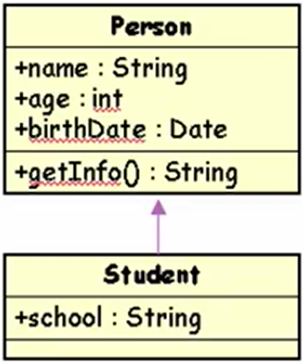
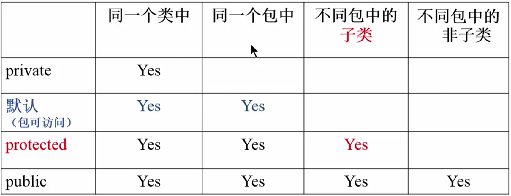
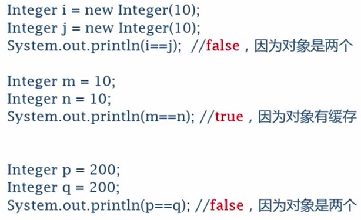
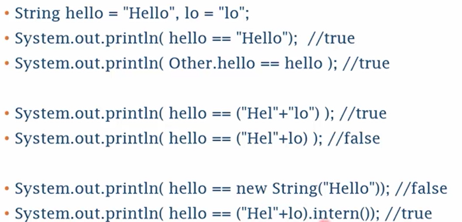

字段和方法
字段（field）是类的属性，是用变量来表示的
字段又称为域、域变量、属性、成员变量等
方法（method）是类的功能和操作，是用函数来表示的
构造方法（constructor）是一种特殊的方法
用来初始化（new）该类的一个新的对象
构造方法和类名同名，而且不写返回数据类型
一般情况下，类都有一个至多个构造方法
如果没有定义任何构造方法，系统会自动产生一个构造方法，称为默认构造方法（default construtor）
默认构造方法不带参数，并且方法体为空
继承
继承（inheritance）是面向对象的程序设计中最为重要的特征之一
子类（subclass），父类或超类（superclass）
父类包括所有直接或间接被继承的类
Java支持单继承：一个类只能有一个直接父类
子类继承父类的状态和行为
可以修改父类的状态或重载父类的行为
可以添加新的状态和行为
好处：
- 可以提高程序的抽象程度
- 实现代码重用，提高开发效率和可维护性
Java中的继承是通过extends关键字来实现的
1
2
3
| class Student extends Person{
...
}
|
如果没有extends，默认为java.lang.Object的子类，所有的类直接或间接地继承java.lang.Object
继承关系在UML图中，是用一个箭头来表示子类与父类的关系的，相当于is a

1
2
3
4
5
6
| class Student extends Person{
String school;
int score;
boolean isGood(){return score>80;}
}
|
字段
字段的继承：
- 子类可以继承父类的所有字段
- Student自动具有Person的属性(name, age)
字段的隐藏：
- 子类重新定义一个与从父类那里继承来的域变量完全相同的变量，称为域的隐藏。域的隐藏在实际编程中用的少
字段的添加：
- 在定义子类时， 加上新的域变量，就可以使子类比父类多一些属性。如：
1
2
3
4
5
| class Student extends Person
{
String school;
int score;
}
|
方法
方法的继承：
- 父类的非私有方法也可以被子类自动继承。方法的覆盖(Override)(修改)
- 子类也可以重新定义与父类同名的方法，实现对父类方法的覆盖(Override)
方法的添加：
- 子类可以新家一些方法，以针对子类实现相应的功能。
如在类Student中加入一个方法，对分数进行判断：1
2
3
| boolean is GoodStudent(){
return score >= 90;
}
|
方法重载
方法重载（overloading）：多个方法有相同的名字，编译时能识别出来
这些方法的签名（signature）不同，或者是参数个数不同，或者是参数类型不同
通过方法重载可以实现多态（polymorphism）
一个类中可以有几个同名的方法，这称为方法的重载(Overload)。同时还可以重载父类的同名方法。与方法覆盖不同的使，重载不要求参数类型列表相同。重载的方法实际是新加的方法。
如，在类Student中，重载一个名为sayHello的方法：1
2
3
4
5
6
| void sayHello(Student another){
System.out.println("Hi!");
if(school.equals(another.school)){
System.out.println("Shoolmates");
}
}
|
@Override
@Override //JDK1.5以后可以用这个注记来表示(不用也是可以的)
通过方法的覆盖，能够修改对象的同名方法的具体实现方法 this
在方法及构造方法中，使用this来访问字段及方法
使用this解决局部变量与域同名的问题
使用this还可以解决局部变量（方法中的变量）或参数变量与域变量同名的问题 1
2
3
4
| Person(int age, String name){
this.age = age;
this.name = name;
}
|
super的使用
使用super访问父类的域和方法
注：正是由于继承，使用this可以访问父类的域和方法。但有事为了明确地知名父类的域和方法，就要用关键字super。
例如：父类Student有一个域age，在子类Student中用age, this.age, super.age来访问age是完全一样的：1
2
3
4
5
6
| void testThisSuper(){
int a;
a = age;
a = this.age;
a = super.age;
}
|
有时需要使用super以区别同名的域与方法：
- 使用super可以访问被子类所隐藏了的同名变量
- 又如，当覆盖父类的同名方法的同时，又要调用父类的方法，就必须使用super。如：
1
2
3
4
| void sayHello(){
super.sayHello();
System.out.println("My school is " + school);
}
|
使用父类构造方法：构造方法是不能继承的
比如，父类Person有一个构造方法Person(string, int)，不能说子类Student也自动有一个构造方法Student(String, int)。
但是，子类在构造方法中，可以用super来调用父类的构造方法。1
2
3
4
| Student(String name, int age, String school){
super(name, age);
this.school = school;
}
|
super()必须放在第一句 父类对象与子类对象的转换
类似于基本数据类型数据之间的强制类型转换，存在继承关系的父类对象和子类对象之间也可以在一定条件下相互转换。
- 子类对象可以被是非其父类的一个对象
- 父类对象不能被当作其某一个子类的对象
- 如果一个方法的形式参数定义的是父类对象，那么调用这个方法的时候，可以使用子类对象作为实际参数。
- 如果父类对象引用指向的实际是一个子类对象，那么这个父类对象引用可以用强制类型转换(casting)成子类对象的引用
包(package)
包及子包的定义，实际上是为了解决名字空间、名字冲突
- 它与类的继承没有关系。事实上，一个子类与其父类可以位于不同的包中。
包有两方面的含义
- 名字空间、存储路径(文件夹)
- 可访问性(同一包中的各个类，默认情况下可互相访问)
import语句
为了能使用Java中已提供的类，需要用import语句来导入所需要的类。
import语句的格式为：
- import package1[.package2…].(classname |*);
例如：
import java.util.Date;
- 这样，程序中
java.util.Date可以简写为Date
import java.awt.*;import java.awt.event.*;- 注：使用
* 只能表示本层次的所有类，不包括子层次下的类。
Java编译器自动导入包java.lang.*
修饰符
修饰符(modifiers)分为两类
- 访问修饰符(access modifiers)
如public/private等
- 其他修饰符
如abstract等
可以修饰类、也可以修饰类的成员(字段、方法)
成员的控制访问符(权限修饰符)

setter与getter
- 将字段用private修饰，从而更好的将信息进行封装和隐藏
- 用setXXXX和getXXX方法对类的属性进行存取，分别称为setter与getter
- 这种方法有以下有点
- 属性用private更好地封装和隐藏，外部类不能随意存取和修改
- 提供方法来存取对象的属性，在方法中可以对给定的参数的合法性进行检验
- 方法可以用来给出计算后的值
- 方法可以完成其他必要的工作(如清理资源、设定状态，等等)
- 值提供getXXX方法，而不提供setXXXX方法，可以保证属性是只读的
static字段
静态字段最本质的特点是：它们是类的字段，不属于任何一个对象实例。
它不保存在某个对象实例的内存区间中，而是保存在类的内存区域的公共存储单元。
类变量可以通过类名直接访问，也可以通过实例对象来访问，两种方法的结果是相同的。
如System类和in和out对象，就是属于类的域，直接用类名来访问，既System.in和System.out。
用static修饰符修饰的方法仅属于类的静态方法，又称为类方法。
与此相对，不用static修饰的方法，则为实例方法。
类方法的本质是该方法是属于整个类的，不是属于某个实例的。
生命一个方法为static有以下几重含义。
- 非static的方法是属于某个对象的方法，在这个对象创建时，对象的方法在内存中拥有自己专用的代码段。而static的方法是属于整个类的，它在内存中的代码段将随着类的定义而进行分配和装在，不被任何一个对象专有。
- 由于static是方法是属于整个类的，所以它不能操偶那个和处理属于某个对象的成员变量，而只能处理属于整个类的成员变量，即static方法只能处理本类中的static域或调用static方法。
- static方法中，不能访问实例变量，不能使用this或super
- 调用这个方法时，应该使用类名直接调用，也可以用某一个具体的对象名。
例如：Math.random(),Integer.parseInt()等就是类方法，直接用类名进行访问。
final类
- 如果一个类被final修饰符所修饰和限定，说明这个类不能被继承，即不可能有子类。
- final修饰符所修饰的方法，是不能被子类所覆盖的方法。
- final字段及final局部变量
- 它们的值一旦给定，就不能更改
- 是只读量，它们能且只能被赋值一次，而不能被赋值多次。
- 一个字段被static final两个修饰符所限定时，它可以表示常量
- 如Integer.MAX_VALUE(表示最大整数)、Math.PI(表示圆周率)就是这种常量
- 关于赋值
- 在定义static final域时，若不给顶初始值，则按默认值进行初始化(数值为0，boolean型为false，引用型为null)
- 在定义final字段时，若不是static的域，则必须且只能赋值一次，不能缺省
- 这种域的赋值方式有两种
- 一是在定义变量时赋初始值
- 二是在每一个构造函数中进行赋值
- 在定义final局部变量时，也必须且只能赋值一次。它的值可能不是常量，但它的取值在变量存在期间不会改变。
abstract
- abstract类
- 凡是用abstract修饰符修饰的类被称为抽象类
- 抽象类不能被实例化
- abstract方法
- 被abstract所修饰的方法叫抽象方法，抽象方法的作用在为所有子类定义一个统一的接口。对抽象方法只需声明，而不需实现，即用分号(;)而不适用{}，格式如下：
- abstract returnType abstractMethod([paramlist]);
- 抽象类中可以包含抽象方法，也可以不包含abstract方法。但是，一旦某个类中包含了abstract方法，则这个类必须声明为abstract类。
- 抽象方法在子类中必须被实现，否则子类仍然是abstract的。
字段变量与局部变量
字段变量(field)：在类中定义的变量
局部变量(Loval variable)：在方法中定义的参变量
从内存的角度看：
- 存储位置：字段变量为对象的一部分，存在于堆中，局部变量是存在于栈中
- 生命周期不同：字段变量是随着对象的创建而产生的；局部变量是随着调用这个方法时产生的。
- 初始值：字段变量可以自动赋初值；局部变量须显式赋值
多态
多态是指一个程序中相同给的名字表示不同的含义的情况
多态有两种情形：
- 编译时多态：
- 重载(overload)(多个同名的不同方法)
- 如 p.sayHello();和 p.sayHello(“Wang”);
- 运行时多态：
- 覆盖(override)(子类对父类方法进行覆盖)
动态绑定(dynamic binding)，也叫虚方法调用(virtual method invoking)- 在调用方法时，程序会正确地调用子类对象的方法
多态的特点大大提高了程序的抽象程度和简洁性
上溯造型(upcasting)
是把派生类型当作基本类型处理
Person p = new Student();
void fun(Person p){...}
fun(new Person());
虚方法调用，可以实现运行时的多态
- 子类重载了父类方法时，运行时
- 运行时系统根据调用该方法的实例的类型来决定选择哪个方法调用
- 所有的非final方法都会自动地进行动态绑定
构造方法(constructor)
- 对象都有构造方法
- 如果没有，编译器加一个default构造方法
调用本类或父类构造方法
- this调用本类的其他构造方法
- super调用直接父类的构造方法
- this或super要放在第一条语句，且只能够有一条
如果没有this及super，则编译器自动加上super()，即调用直接父类不带参数的构造方法。
因为必须令所有父类的构造方法都得到调用，否则整个对象的构建就可能不正确。
构造方法的执行过程
- 调用本类或父类的构造方法，直至最高一层(Object)
- 按照声明顺序执行字段的初始化赋值
- 执行构造函数中的各语句
先父类构造，再本类成员赋值，最后执行构造方法中的语句
对象清除与垃圾回收
对象清除
Java里的对象不需要使用方法消除，Java会自动地清除。
自动清除再Java内称为垃圾回收(garbage collection)，对象回收是由Java虚拟机的垃圾回收线程来完成的。
System.gc()方法，它是System类的static方法，希望虚拟机再有空的情况下，进行这个垃圾回收，但是它仅仅只是一个建议(suggest)。
Java中没有析构方法(destructor)，但Object的finalize()有类似功能
- 系统再回收时会自动调用对象的finalize()方法
- protected void finalize() throws Throwable{}
子类的finalize()方法
- 可以再子类的finalize()方法释放系统资源
- 一般来说，子类的finalize()方法中应该调用父类的finalize()方法，以保证父类的清理工作能够正常进行。
try-with-resources
由于finalize()方法的调用时机并不确定，所以一半不用finalize()
关闭打开的文件、清除一些非内存资源等工作需要进行处理
可以使用try-with-resources语句
对于实现了java.lang.AutoCloseable的对象
1
2
3
| try(Scanner scanner = new Scanner(...)){
...
}
|
会自动调用其close()方法，相当于
1
2
3
| finally{
Scanner.close();
}
|
内部类与匿名类
内部类(inner class)是在其他类中的类
匿名类(anonymous class)是一种特殊的内部类，它没有类名
内部类(Inner class)
内部类定义：
- 将类的定义class xxxx{…}置入一个类的内部即可
- 编译器生成xxxx$xxxx这样的class文件
- 内部类不能够与外部类同名
内部类的使用：
- 在封装它的类的内部使用内部类，与普通类的使用方式相同
- 在其他地方使用
- 类名前要冠以外部类的名字
- 在用new创建内部类时，也要在new前面冠以对象变量
内部对象名.new 内部类名(参数)
在内部类中使用外部类得成员：
内部类中可以直接访问外部类得字段及方法，即使private也可以。
如果内部类中有与外部类同名得字段或方法，则可以用外部类名.this.字段及方法
内部类的修饰符
内部类与类中的字段、方法一样是外部类的成员，它的前面也可以有访问控制符和其他修饰符
- 访问控制符：public，protected，默认及private
- final，abstract
static修饰符
用static修饰内部类，表明该内部类实际是一种外部类
- 因为它与外部类的实例无关
- 有人认为static的类是嵌套类（nested class），不是内部类inner class
static类在使用时：
- 实例化static类时，在new前面不需要用对象实例变量
- static类中不能访问其外部类的非static的字段及方法，既只能够访问static成员。
- static方法中不能访问非static的域及方法，也不能够不带前缀地new一个非static的内部类。
局部类(local class)
在一个方法中定义的类，这种类称为”方法中的内部类”，或者叫局部类(local class)
和局部变量一样，方法中的内部类
不能用public, private, protected, static修饰，但是可以被final或者abstract修饰
可以访问其外部类的成员
不能够访问该方法的局部变量，除非时final局部变量。
匿名类(anonymous class)
是一种特殊的内部类，它没有类名，在定义类的同时就生成该对象的一个实例
是一个”一次性使用”的类
匿名类的使用
- 不取名字，直接用其父类或接口的名字
- 也就是说，该类是父类的子类，或者实现了一个接口
- 编译器生成 xxxxx$1之类的名字
- 类的定义的同时就创建实例，即类的定义前面有一个new
- new类名或接口名(){…}
- 不使用关键词class，也不适用extends及implements
- 在构造对象时使用父类构造方法
- 不能够定义构造方法，因为它没有名字
- 如果new对象时，要带参数，则使用父类的构造方法
Lambda表达式(λ expression)
基本写法：
- (参数)->结果
- 如(String s)->s.length()
- 如 x -> x * x
- 如 ()->{System.out.println(“aaa”);}
大体上相当于其他语言的”匿名函数”或”函数指针”
在Java中它实际上是”匿名类的一个实例”
在线程的例子中：new Thread( ()->{...}).start();
在积分的例子中：
d = Integral( x->Math.sin(x), 0, 1, EPS);d = Integral( x->x*x, 0, 1, EPS);d = Integral( x->1, 0, 1, EPS);
在按钮时间处理中：btn.addActionListener( e->{...});
能携程Lambda的接口的条件
由于Lambda只能表示一个函数，所以能写成Lambda的接口要求包含且最多只能有一个抽象函数，这样的接口可以(但不强求)用注记
- @FunctionalInterface来表示。称为函数式接口
- 如：
1
2
| @FunctionalInterface
interface Fun{ double fun( double x);}
|
新的语法
从JDK1.5起，增加了一些新的语法，大部分是编译器自动翻译的，称为Complier sugar
基本类型的包装类
它将基本类型(primitive type)包装成Object(引用类型)
如int -> Interger
共8类:Boolean|Byte|Short|Character|Integer|Long|Float|Double
Intergar I = new Integer(10);
装箱与拆箱
装箱(Boxing)：Integer I = 10;
拆箱(Unboxing)：int i = I;
实际译为：
- Integer I = Integer.valueOf(10);
- int i = I.intValue();
主要方便用于集合中，如：
Object [] ary = {1,"aaa"};
枚举(enum)
是一种特殊的class类型
在简单的情况下，用法与其他语言的enum相似
enum Light{ Red, Yellow, Green;};Light light = Light.Red;
但实际上，它生成了 class Light extends java.lang.Enum 自定义枚举
可以在enum定义体中，添加字段、方法、构造方法1
2
3
4
5
6
7
8
9
10
11
12
13
14
15
16
| enum Direction{
EAST("东",1),SOUTH("南",2),
WEST("西",3),NORTH("北",4);
private Direction(Stirng desc, int num){
this.desc = desc;
this.num = num;
}
private String desc;
private int num;
public String getDesc(){
return desc;
}
public int getNum(){
return num;
}
}
|
注解(annotation)
又称为注记、标记、标注、注释(不同于comments)
是在各种语法要素上加上附加信息，以供编译器或其他程序使用
所有的注解都是java.lang.annotation.Annotation的子类 常用的注解
- @Override 表示覆盖父类的方法
- @Deprecated 表示过时的方法
- @SuppressWarnings 表示让编译器不产生警告
自定义注解
1
2
3
| public @interface Author{
String name();
}
|
没有指针的Java
引用与指针
引用(reference)实质就是指针(pointer)
但是它是受控的、安全的
C语言指针在Java中的体现
- 传地址 -> 对象
- 引用类型，引用本身就相当于指针
- 可以用来修改对象的属性、调用对象的方法
- 基本类型：没有对应的
- 指针运算 -> 数组
- 函数指针 -> 接口、Lambda表达式
- 指向节点的指针 -> 对象的引用
1
2
3
4
| class Node{
Object data;
Node next;
}
|
- 使用JNI
- Java Native Interface(JNI)
- 它允许Java代码和其他语言写的代码进行交互
相等还是不相等 ==
基本类型是值相等
引用类型是引用相等
基本类型的相等
- 数值类型：转换后比较
- 浮点数：最好不直接用==
- Double.NAN == Double.NAN结果为false
- bolean型无法与int相比较

原因是-128到+127是有缓存的，所以引用的是同一个对象枚举、引用对象是否相等
枚举类型：内部进行了唯一实例化，所以可以直接判断
引用对象：
- 是直接看两个引用给是否一样
- 如果要判断内容是否一样，则要重写equals方法
- 如果重写equals方法，则最好重写hashCode()方法
String对象的特殊性
String对象：
- 判断相等，一定不要用==，要用equals
- 但是字符串常量(String literal)及字符串常量会进行内部化(interned)，相同的字符串常量是==的
